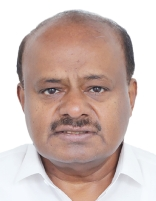
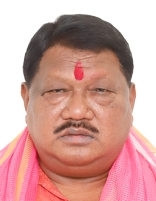
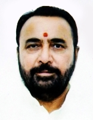
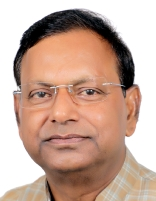
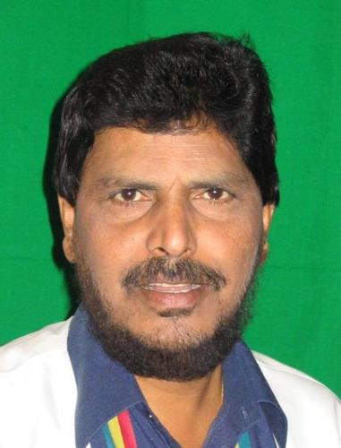

তৃতীয় নৰেন্দ্ৰ মোডী কেবিনেট

সময়কাল:
৯ জুন ২০২৪ - ১ জানুৱাৰী ২০২৫
উপ-প্ৰধানমন্ত্ৰীসকল:
সুৰ-ৰচনা:
কেবিনেট মন্ত্ৰী: ৩০
ৰাজ্যিক মন্ত্ৰী (স্বাধীন চাৰ্জ): ৫
ৰাজ্যিক মন্ত্ৰী: ৩৬
মূল কেবিনেট মন্ত্ৰী
ৰাজনাথ সিং
প্ৰতিৰক্ষা মন্ত্ৰালয়
অমিত শ্বাহ
গৃহ পৰিক্ৰমা মন্ত্ৰালয়
নীতিন গাডকাৰী
পথ পৰিবহণ আৰু ঘাইপথ মন্ত্ৰালয়
জগত প্ৰকাশ নাড্ডা
স্বাস্থ্য আৰু পৰিয়াল কল্যাণ মন্ত্ৰালয়
সকলো মন্ত্ৰী
নৰেন্দ্ৰ মোদী
পাৰমাণৱিক শক্তি বিভাগ[প্ৰধানমন্ত্ৰী]মহাকাশ বিভাগ[প্ৰধানমন্ত্ৰী]
কৰ্মী ৰাজহুৱা অভিযোগ আৰু পেঞ্চন মন্ত্ৰালয়[প্ৰধানমন্ত্ৰী]

ৰাজনাথ সিং
প্ৰতিৰক্ষা মন্ত্ৰালয়[কেবিনেট মন্ত্ৰী]
অমিত শ্বাহ
সহযোগিতা মন্ত্ৰালয়[কেবিনেট মন্ত্ৰী]গৃহ পৰিক্ৰমা মন্ত্ৰালয়[কেবিনেট মন্ত্ৰী]

নীতিন গাডকাৰী
পথ পৰিবহণ আৰু ঘাইপথ মন্ত্ৰালয়[কেবিনেট মন্ত্ৰী].jpg)
জগত প্ৰকাশ নাড্ডা
ৰাসায়নিক আৰু সাৰ মন্ত্ৰালয়[কেবিনেট মন্ত্ৰী]স্বাস্থ্য আৰু পৰিয়াল কল্যাণ মন্ত্ৰালয়[কেবিনেট মন্ত্ৰী]

শিৱৰাজ সিং চৌহান
কৃষি মন্ত্ৰালয়[কেবিনেট মন্ত্ৰী]গ্ৰামোন্নয়ন মন্ত্ৰালয়[কেবিনেট মন্ত্ৰী]
_(cropped).jpg)
নিৰ্মলা সীতাৰমণ
কৰ্পৰেট পৰিক্ৰমা মন্ত্ৰালয়[কেবিনেট মন্ত্ৰী]বিত্ত মন্ত্ৰালয়[কেবিনেট মন্ত্ৰী]

সুব্ৰহ্মণ্য জয়শংকৰ
বৈদেশিক পৰিক্ৰমা মন্ত্ৰালয়[কেবিনেট মন্ত্ৰী]
মনোহৰ লাল খট্টৰ
গৃহ নিৰ্মাণ আৰু নগৰীয়া দৰিদ্ৰতা নিৰাময় মন্ত্ৰালয়[কেবিনেট মন্ত্ৰী]শক্তি মন্ত্ৰালয়[কেবিনেট মন্ত্ৰী]

ষ্টীল মন্ত্ৰালয়[কেবিনেট মন্ত্ৰী]
এইচ. ঘ.
গধুৰ উদ্যোগ মন্ত্ৰালয়[কেবিনেট মন্ত্ৰী]ষ্টীল মন্ত্ৰালয়[কেবিনেট মন্ত্ৰী]
.jpg)
পীয়ুষ গোয়াল
বাণিজ্য আৰু উদ্যোগ মন্ত্ৰালয়[কেবিনেট মন্ত্ৰী]
ধৰ্মেন্দ্ৰ প্ৰধান
শিক্ষা মন্ত্ৰালয়[কেবিনেট মন্ত্ৰী]
জিতন ৰাম মাঞ্জী
ক্ষুদ্ৰ ক্ষুদ্ৰ আৰু মজলীয়া উদ্যোগ মন্ত্ৰালয়[কেবিনেট মন্ত্ৰী]
ৰাজীৱ ৰঞ্জন সিং
মীন, পশুপালন আৰু দুগ্ধ উৎপাদন মন্ত্ৰালয়[কেবিনেট মন্ত্ৰী]পঞ্চায়তী মন্ত্ৰালয় ৰাজ[কেবিনেট মন্ত্ৰী]

সৰ্বানন্দ সোণোৱাল
জাহাজ মন্ত্ৰালয়[কেবিনেট মন্ত্ৰী]
বীৰেন্দ্ৰ কুমাৰ খাটিক
সামাজিক ন্যায় আৰু ক্ষমতায়ন মন্ত্ৰালয়[কেবিনেট মন্ত্ৰী]
ৰামমোহন নাইডু কিঞ্জৰাপু
অসামৰিক বিমান পৰিবহণ মন্ত্ৰালয়[কেবিনেট মন্ত্ৰী]প্ৰলহদ যোশী
গ্ৰাহক পৰিক্ৰমা, খাদ্য আৰু ৰাজহুৱা বিতৰণ মন্ত্ৰালয়[কেবিনেট মন্ত্ৰী]নতুন আৰু নবীকৰণযোগ্য শক্তি মন্ত্ৰালয়[কেবিনেট মন্ত্ৰী]

জুৱাল ওৰাম
জনজাতীয় পৰিক্ৰমা মন্ত্ৰালয়[কেবিনেট মন্ত্ৰী]
গিৰিৰাজ সিং
বস্ত্ৰ মন্ত্ৰালয়[কেবিনেট মন্ত্ৰী]
অশ্বিনী বৈষ্ণৱ
তথ্য প্ৰযুক্তি মন্ত্ৰালয়[কেবিনেট মন্ত্ৰী]ৰেল মন্ত্ৰালয়[কেবিনেট মন্ত্ৰী]

জ্যোতিৰাদিত্য সিন্ধিয়া
যোগাযোগ মন্ত্ৰালয়[কেবিনেট মন্ত্ৰী]উত্তৰ-পূব অঞ্চলৰ উন্নয়ন মন্ত্ৰালয়[কেবিনেট মন্ত্ৰী]

ভূপেন্দৰ যাদৱ
পৰিৱেশ আৰু বন মন্ত্ৰালয়[কেবিনেট মন্ত্ৰী]
গজেন্দ্ৰসিং শেখাৱত
সংস্কৃতি মন্ত্ৰালয়[কেবিনেট মন্ত্ৰী]পৰ্যটন মন্ত্ৰালয়[কেবিনেট মন্ত্ৰী]

অন্নপূৰ্ণা দেৱী যাদৱ
মহিলা আৰু শিশু উন্নয়ন মন্ত্ৰালয়[কেবিনেট মন্ত্ৰী]
কিৰেন ৰিজিজু
সংখ্যালঘু পৰিক্ৰমা মন্ত্ৰালয়[কেবিনেট মন্ত্ৰী]সংসদীয় পৰিক্ৰমা মন্ত্ৰালয়[কেবিনেট মন্ত্ৰী]
_(cropped).jpg)
হৰদীপ সিং পুৰী
পেট্ৰলিয়াম আৰু প্ৰাকৃতিক গেছ মন্ত্ৰালয়[কেবিনেট মন্ত্ৰী]’,_in_New_Delhi.JPG)
এল. মানসুখ মাণ্ডভিয়া
শ্ৰম মন্ত্ৰালয়[কেবিনেট মন্ত্ৰী]যুৱ পৰিক্ৰমা আৰু ক্ৰীড়া মন্ত্ৰালয়[কেবিনেট মন্ত্ৰী]

জি. কিষাণ ৰেড্ডী
কয়লা মন্ত্ৰালয়[কেবিনেট মন্ত্ৰী]খনি মন্ত্ৰালয়[কেবিনেট মন্ত্ৰী]

চিৰাগ পাছৱান
খাদ্য প্ৰক্ৰিয়াকৰণ উদ্যোগ মন্ত্ৰালয়[কেবিনেট মন্ত্ৰী]
চন্দ্ৰকান্ত ৰঘুনাথ পাটিল
জল শক্তি মন্ত্ৰালয়[কেবিনেট মন্ত্ৰী]
ৰাও ইন্দৰজিৎ সিং
সংস্কৃতি মন্ত্ৰালয়[ৰাজ্যিক মন্ত্ৰী]পৰিকল্পনা মন্ত্ৰালয়[ৰাজ্যিক মন্ত্ৰী (স্বাধীন চাৰ্জ)]
পৰিসংখ্যা আৰু কাৰ্যসূচী ৰূপায়ণ মন্ত্ৰালয়[ৰাজ্যিক মন্ত্ৰী (স্বাধীন চাৰ্জ)]

জিতেন্দ্ৰ সিং
পাৰমাণৱিক শক্তি বিভাগ[ৰাজ্যিক মন্ত্ৰী]মহাকাশ বিভাগ[ৰাজ্যিক মন্ত্ৰী]
পৃথিৱী বিজ্ঞান মন্ত্ৰালয়[ৰাজ্যিক মন্ত্ৰী (স্বাধীন চাৰ্জ)]

অৰ্জুন ৰাম মেঘৱাল
আইন আৰু ন্যায় মন্ত্ৰালয়[ৰাজ্যিক মন্ত্ৰী (স্বাধীন চাৰ্জ)]সংসদীয় পৰিক্ৰমা মন্ত্ৰালয়[ৰাজ্যিক মন্ত্ৰী]

প্ৰতাপৰাও গণপাত্ৰও জাধৱ
আয়ুৰ্বেদ যোগ আৰু প্ৰকৃতি চিকিৎসা মন্ত্ৰালয় ইউনানি সিদ্ধ আৰু হোমিঅ'পেথী[ৰাজ্যিক মন্ত্ৰী (স্বাধীন চাৰ্জ)]
জয়ন্ত চৌধুৰী
শিক্ষা মন্ত্ৰালয়[ৰাজ্যিক মন্ত্ৰী]দক্ষতা বিকাশ আৰু উদ্যোগীকৰণ মন্ত্ৰালয়[ৰাজ্যিক মন্ত্ৰী (স্বাধীন চাৰ্জ)]

জিতীন প্ৰসাদ
বাণিজ্য আৰু উদ্যোগ মন্ত্ৰালয়[ৰাজ্যিক মন্ত্ৰী]তথ্য প্ৰযুক্তি মন্ত্ৰালয়[ৰাজ্যিক মন্ত্ৰী]

শ্ৰীপদ ইয়াসো নাইক
নতুন আৰু নবীকৰণযোগ্য শক্তি মন্ত্ৰালয়[ৰাজ্যিক মন্ত্ৰী]শক্তি মন্ত্ৰালয়[ৰাজ্যিক মন্ত্ৰী]

পংকজ চৌধাৰী
বিত্ত মন্ত্ৰালয়[ৰাজ্যিক মন্ত্ৰী]
কৃষণ পাল
সহযোগিতা মন্ত্ৰালয়[ৰাজ্যিক মন্ত্ৰী]
আথাৱালে ৰামদাস বান্দু
সামাজিক ন্যায় আৰু ক্ষমতায়ন মন্ত্ৰালয়[ৰাজ্যিক মন্ত্ৰী]
ৰাম নাথ ঠাকুৰ
কৃষি মন্ত্ৰালয়[ৰাজ্যিক মন্ত্ৰী]
নিত্যানন্দ ৰায়
গৃহ পৰিক্ৰমা মন্ত্ৰালয়[ৰাজ্যিক মন্ত্ৰী]
অনুপ্ৰিয়া পেটেল
ৰাসায়নিক আৰু সাৰ মন্ত্ৰালয়[ৰাজ্যিক মন্ত্ৰী]স্বাস্থ্য আৰু পৰিয়াল কল্যাণ মন্ত্ৰালয়[ৰাজ্যিক মন্ত্ৰী]

ভি.
জল শক্তি মন্ত্ৰালয়[ৰাজ্যিক মন্ত্ৰী]ৰেল মন্ত্ৰালয়[ৰাজ্যিক মন্ত্ৰী]

পেম্মাসনি চন্দ্ৰ চেখৰ
যোগাযোগ মন্ত্ৰালয়[ৰাজ্যিক মন্ত্ৰী]গ্ৰামোন্নয়ন মন্ত্ৰালয়[ৰাজ্যিক মন্ত্ৰী]

এছ. পি. সিং বাঘেল
মীন, পশুপালন আৰু দুগ্ধ উৎপাদন মন্ত্ৰালয়[ৰাজ্যিক মন্ত্ৰী]পঞ্চায়তী মন্ত্ৰালয় ৰাজ[ৰাজ্যিক মন্ত্ৰী]

শোভা কাৰাণ্ডলাজে
শ্ৰম মন্ত্ৰালয়[ৰাজ্যিক মন্ত্ৰী]ক্ষুদ্ৰ ক্ষুদ্ৰ আৰু মজলীয়া উদ্যোগ মন্ত্ৰালয়[ৰাজ্যিক মন্ত্ৰী]

কীৰ্তি বৰ্ধন সিং
পৰিৱেশ আৰু বন মন্ত্ৰালয়[ৰাজ্যিক মন্ত্ৰী]বৈদেশিক পৰিক্ৰমা মন্ত্ৰালয়[ৰাজ্যিক মন্ত্ৰী]

খ. এল. ভাৰ্মা (উত্তৰ প্ৰদেশৰ ৰাজনীতিবিদ)
গ্ৰাহক পৰিক্ৰমা, খাদ্য আৰু ৰাজহুৱা বিতৰণ মন্ত্ৰালয়[ৰাজ্যিক মন্ত্ৰী]
শান্তনু ঠাকুৰ
জাহাজ মন্ত্ৰালয়[ৰাজ্যিক মন্ত্ৰী]
সুৰেশ গোপী
পেট্ৰলিয়াম আৰু প্ৰাকৃতিক গেছ মন্ত্ৰালয়[ৰাজ্যিক মন্ত্ৰী]পৰ্যটন মন্ত্ৰালয়[ৰাজ্যিক মন্ত্ৰী]

এল. মুৰুগান
তথ্য আৰু সম্প্ৰচাৰ মন্ত্ৰালয়[ৰাজ্যিক মন্ত্ৰী]সংসদীয় পৰিক্ৰমা মন্ত্ৰালয়[ৰাজ্যিক মন্ত্ৰী]

অজয় তামতা
পথ পৰিবহণ আৰু ঘাইপথ মন্ত্ৰালয়[ৰাজ্যিক মন্ত্ৰী]
বন্দী সঞ্জয় কুমাৰ
গৃহ পৰিক্ৰমা মন্ত্ৰালয়[ৰাজ্যিক মন্ত্ৰী]
কমলেশ পাছৱান
গ্ৰামোন্নয়ন মন্ত্ৰালয়[ৰাজ্যিক মন্ত্ৰী]
ভগীৰথ চৌধুৰী
কৃষি মন্ত্ৰালয়[ৰাজ্যিক মন্ত্ৰী]
সতীশ চন্দ্ৰ ডুবে
কয়লা মন্ত্ৰালয়[ৰাজ্যিক মন্ত্ৰী]খনি মন্ত্ৰালয়[ৰাজ্যিক মন্ত্ৰী]

সঞ্জয় সিং
প্ৰতিৰক্ষা মন্ত্ৰালয়[ৰাজ্যিক মন্ত্ৰী]
ৰৱনীত সিং
খাদ্য প্ৰক্ৰিয়াকৰণ উদ্যোগ মন্ত্ৰালয়[ৰাজ্যিক মন্ত্ৰী]ৰেল মন্ত্ৰালয়[ৰাজ্যিক মন্ত্ৰী]

দুৰ্গা দাস উইকে
জনজাতীয় পৰিক্ৰমা মন্ত্ৰালয়[ৰাজ্যিক মন্ত্ৰী]
ৰক্ষা খাদাসে
যুৱ পৰিক্ৰমা আৰু ক্ৰীড়া মন্ত্ৰালয়[ৰাজ্যিক মন্ত্ৰী]
সুকান্ত মজুমদাৰ
উত্তৰ-পূব অঞ্চলৰ উন্নয়ন মন্ত্ৰালয়[ৰাজ্যিক মন্ত্ৰী]শিক্ষা মন্ত্ৰালয়[ৰাজ্যিক মন্ত্ৰী]

সাবিত্ৰী ঠাকুৰ
মহিলা আৰু শিশু উন্নয়ন মন্ত্ৰালয়[ৰাজ্যিক মন্ত্ৰী]
টোখান সাহু
গৃহ নিৰ্মাণ আৰু নগৰীয়া দৰিদ্ৰতা নিৰাময় মন্ত্ৰালয়[ৰাজ্যিক মন্ত্ৰী]
ৰাজ ভূষণ চৌধুৰী
জল শক্তি মন্ত্ৰালয়[ৰাজ্যিক মন্ত্ৰী]
ভূপতি ৰাজু শ্ৰীনিবাস বৰ্মা
গধুৰ উদ্যোগ মন্ত্ৰালয়[ৰাজ্যিক মন্ত্ৰী]ষ্টীল মন্ত্ৰালয়[ৰাজ্যিক মন্ত্ৰী]

হৰ্ষ মালহোত্ৰা
কৰ্পৰেট পৰিক্ৰমা মন্ত্ৰালয়[ৰাজ্যিক মন্ত্ৰী]
নিম্বুয়েন জয়ন্তীভাই বাম্ভনীয়া
গ্ৰাহক পৰিক্ৰমা, খাদ্য আৰু ৰাজহুৱা বিতৰণ মন্ত্ৰালয়[ৰাজ্যিক মন্ত্ৰী]
মুৰলীধৰ মোহল
অসামৰিক বিমান পৰিবহণ মন্ত্ৰালয়[ৰাজ্যিক মন্ত্ৰী]সহযোগিতা মন্ত্ৰালয়[ৰাজ্যিক মন্ত্ৰী]

জৰ্জ কুৰিয়ান
মীন, পশুপালন আৰু দুগ্ধ উৎপাদন মন্ত্ৰালয়[ৰাজ্যিক মন্ত্ৰী]সংখ্যালঘু পৰিক্ৰমা মন্ত্ৰালয়[ৰাজ্যিক মন্ত্ৰী]

পবিত্ৰ মাৰ্ঘেৰিটা
বৈদেশিক পৰিক্ৰমা মন্ত্ৰালয়[ৰাজ্যিক মন্ত্ৰী]বস্ত্ৰ মন্ত্ৰালয়[ৰাজ্যিক মন্ত্ৰী]